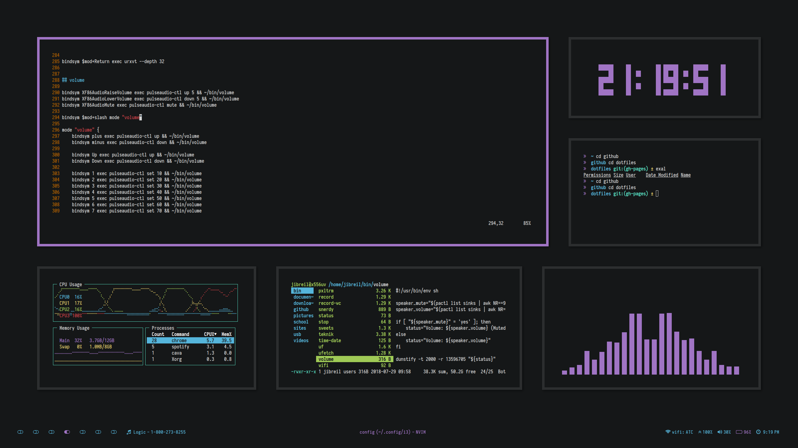
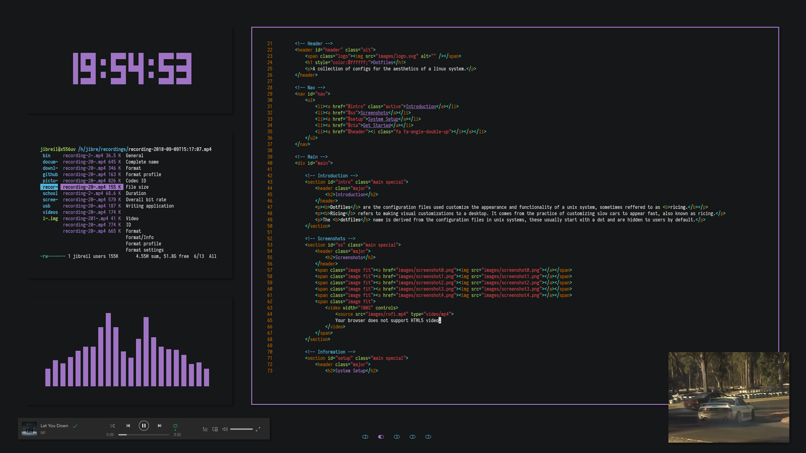
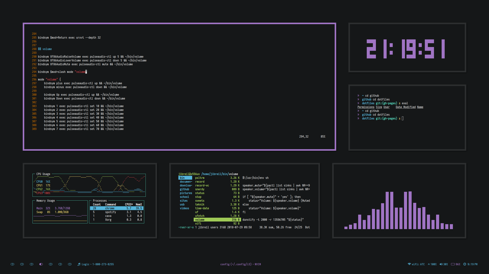
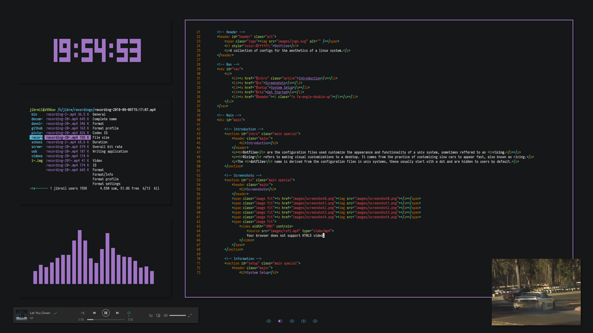

Introduction
Dotfiles are the configuration files used customize the appearance and functionality of a unix system, sometimes reffered to as ricing.
Ricing refers to making visual customizations to a desktop. It comes from the practice of customizing slow cars to appear fast, also known as ricing.
The dotfiles name is derived from the configuration files in unix systems, these usually start with a dot and are hidden to users by default.
Screenshots


 



{kind=link}
{kind=link}
System Setup
bar: polybar
browser: chrome
colour scheme: base16-seti
distro: Arch
file manager (cli): ranger
file manager (gui): thunar
fonts: Iosevka and
Office
Code Pro
launcher: rofi
locker: betterlockscreen
notification daemon: dunst
screenshot and recording tool: nougat
shell: zsh (oh-my-zsh)
system info: neofetch
terminal: rxvt-unicode-patched
text editor (cli): neovim
text editor (gui): vs
code
window manager: i3-gaps
Like what you see?
You can get my dotfiles from the GitHub repository, use them to make additions or modifications to your existing configs or replace them completely, whatever tickles your fancy.